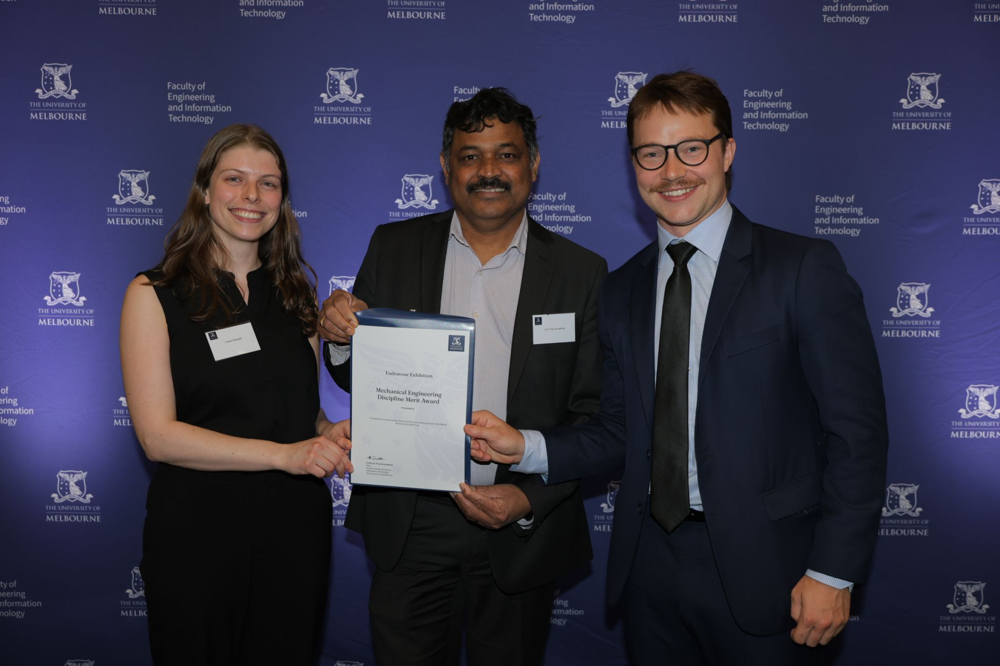

Project 02 / Control research
Plasma-Powered Autonomous Drag Reduction
Exploring how autonomous control can shape airflow with a lightweight plasma actuator.
- My contribution
- Test facility & control-architecture development
- Project type
- Experimental research
- Tools & focus
- Autonomous control · Plasma actuation · Flow dynamics

The idea
Airflow can be influenced by an actuator with no conventional moving surface. A dielectric barrier discharge plasma actuator uses electrodes separated by an insulating material to ionise nearby air and generate a small jet of flow.
That makes plasma actuation an interesting control problem: how can autonomous strategies make use of this effect in the pursuit of reduced aerodynamic drag?
My contribution
My research partner Casey and I built a test facility for dielectric barrier discharge plasma actuators. I investigated autonomous control strategies for these actuators as part of that work.
The project connected control research with a physical flow-control mechanism: lightweight films with flexible copper electrodes embedded in an insulator, driven by a high-voltage potential between the electrodes.
Inside the system
- Actuator structure. Flexible copper electrodes and an insulating layer form a lightweight actuator.
- Physical mechanism. A high voltage across the electrodes ionises air and creates a small induced flow.
- Research focus. The work investigated autonomous control strategies for this type of actuator, with drag reduction as the application.
Electrical drive
Apply a voltage across insulated electrodes.
Plasma generation
Ionise air close to the actuator surface.
Induced airflow
Create a small jet that influences local flow.
Functional overview of the project’s main elements.
See it in motion.
Project footage / silent excerpt
A short, silent excerpt from the original project demonstration. Plasma-actuator footage from the original project demonstration. Open video file ↗
Research update
Casey and I found that the actuators’ behaviour changed substantially at low Reynolds numbers. We also built control architectures for the researchers continuing the work.
We received the Mechanical Engineering Discipline Merit Award at the University of Melbourne for our test-facility work.


Research contribution
A plasma-actuator test facility, investigation of low-Reynolds-number behaviour and control architectures to support follow-on research.